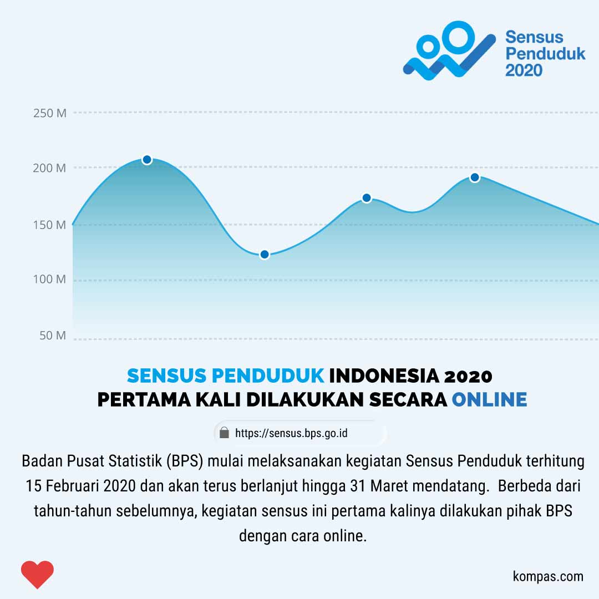

KARYA SAYA
Beberapa hasil editan saya@hei.desain


Pecandu dan Penikmat Roti
Nama saya Hendra Nugroho. saya lahir di jakarta tanggal 23 Oktober 1996. saya bertempat tinggal di Tangerang namun saat ini saya sedang tinggal di Yogyakarta (karena masih nyaman). Pendidikan terakhir saya S1 Fisika di UIN Sunan Kalijaga Yogyakarta. Untuk mencapai gelar S1 tersebut, saya membutuhkan waktu 3 tahun 8 bulan dengan predikat kelulusan sangat memuaskan. Selain fokus menyelesaikan studi, saya juga aktif di himpunan mahasiswa program studi (HMPS) saya sebagai anggota divisi riset dan teknologi. saya juga pernah menjadi asisten laboratorium sebagai asisten praktikum fisika dasar dan optika gelombang. Saat ini, saya sedang menjalani bisnis kecil saya sembari melatih soft skill dengan menjadi grafik desainer (ig @hei.desain). kesibukan yang lain, saya juga sedang mendalami dunia bahasa pemrograman seperti HTML, CSS, PHP, python. semua itu saya kerjakan secara otodidak. Jadi walaupun pendidikan saya tidak terkait dengan bidang IT dan Desain namun saya sangat menggemari keduanya.Selain dua bidang itu, saya juga menggemari dunia otomotif dan olahraga.
Hendra Nugroho
Photoshop dan Illustrator
Basic Web Programming
Technical Support
Beberapa hasil editan saya@hei.desain
Swing by for a cup of , or leave me a note: